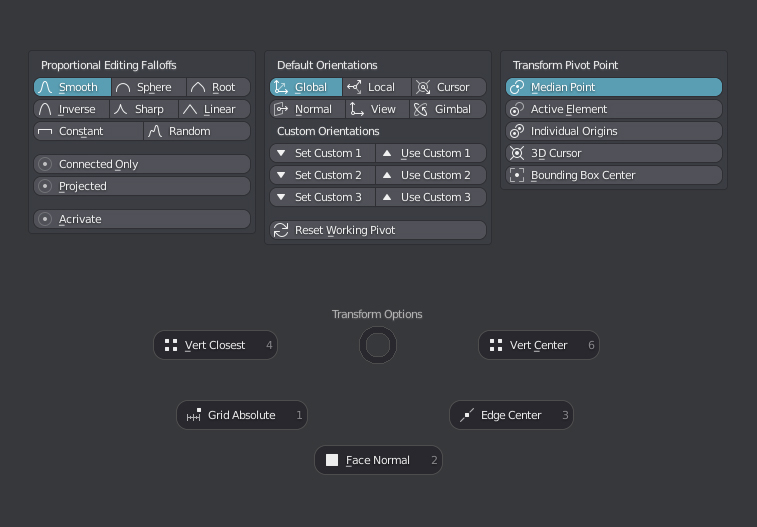
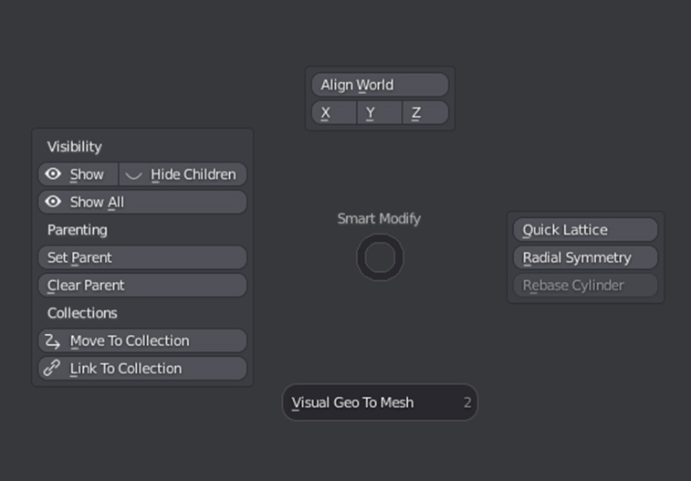
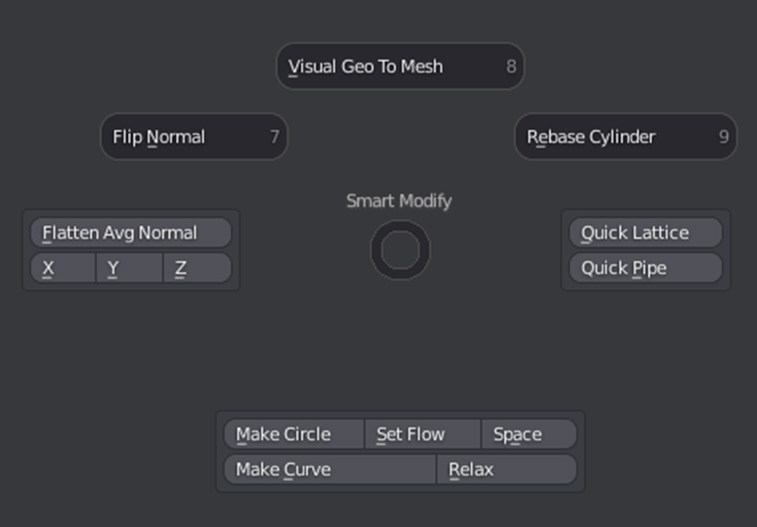
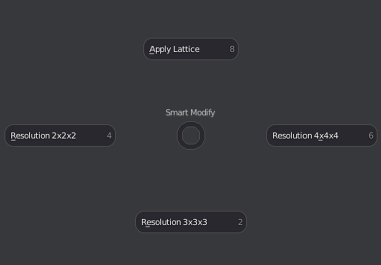
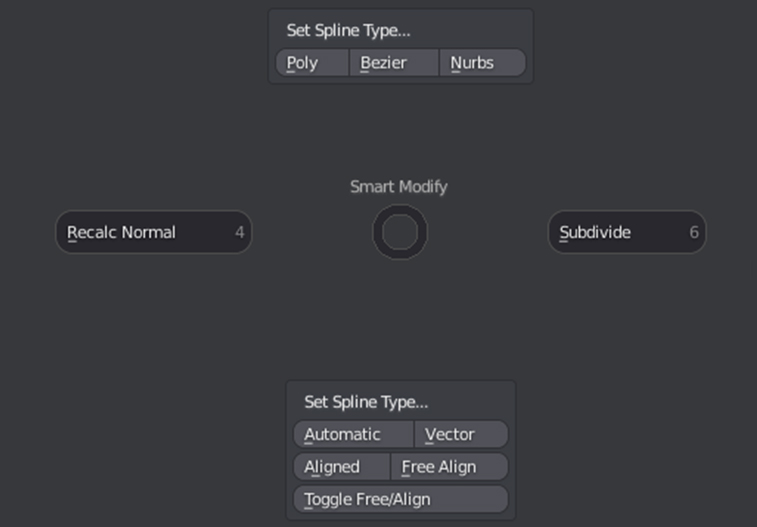
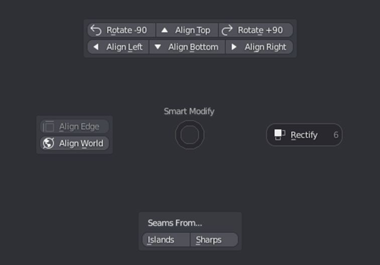

Pie Menus
Transform Options Pies

Proportional Editing Falloffs
Allows access to all the Proportional Editing Falloffs as well as activating and deactivating it.
Transform Orientations
Allows access to all the default orientations as well as quickly setting 3 custom orientations.
Reset Orientation enables to the last used default orientation if using a custom orientation
Transform Pivot Point
Allows access to all the Transform Pivot Points.
Snap Presets
Quick snap presets that set multiple snaping options at once
-
Vert Closest: Snaps to closest vertex.
-
Vert Center: Snaps to vertex center.
-
Grid Absolute: Snaps to the closest increment in absolute mode.
-
Face Normal: Snaps position and alignment to the center of a face
-
Edge Center: Snaps to the edge's middle point.
Smart Modify Pie
Context Sensitive Pie Menu, gives quick access to relevant tools based on the context.
Object Mode

Edit Mesh Mode

Lattice Mode

Curve Mode

UV Mode
 Requires textools